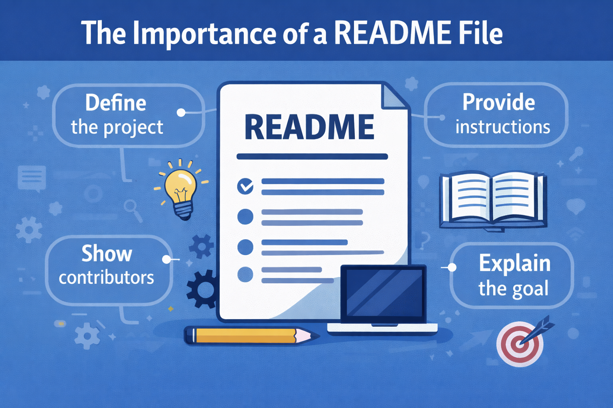
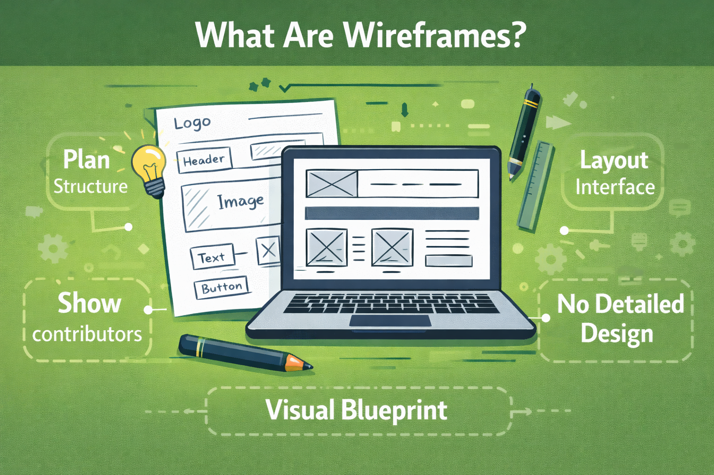
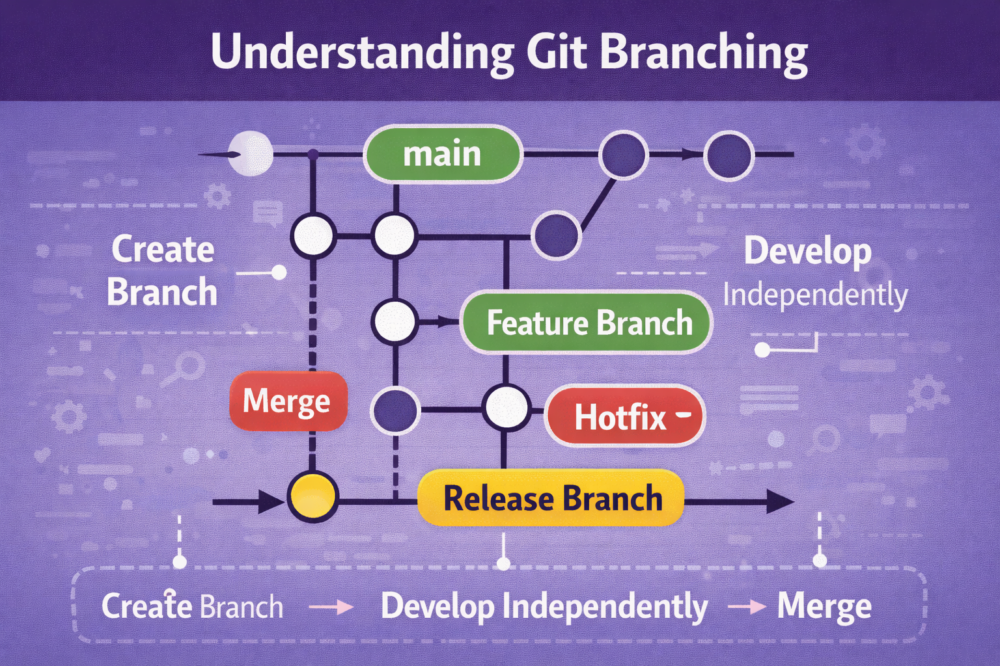

What is the purpose of a README file?
A README file is a key document that introduces and explains your
project to others. It typically outlines what the project does,
how to install and use it, and any important details or requirements.
By providing clear instructions and context, a good README helps
users and collaborators quickly understand your work and how to get started.
Read more

What is the purpose of a wireframe?
A wireframe is a basic, two-dimensional visual representation
of a web page, app interface, or product layout. You can think
of it as a low-fidelity, functional sketch. Product designers
and UX (user experience) professionals draw up wireframes to
communicate how they plan to arrange and prioritize features,
and how they intend for users to interact with its product or website.
Read more

What is a branch in Git?
Git branching allows developers to work on new features,
bug fixes, or experiments without affecting the main codebase.
Each branch acts as an independent line of development,
making it easy to test changes and collaborate with others.
Once the work is complete and reviewed, branches can be merged
back into the main project, keeping the workflow organized and efficient.
Read more